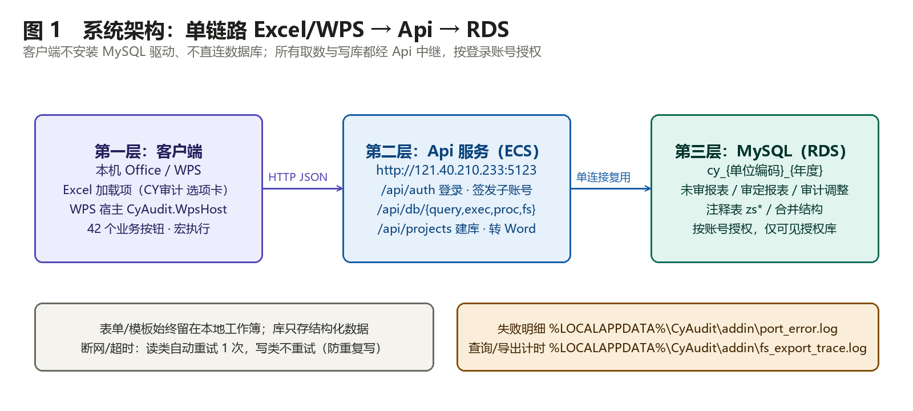
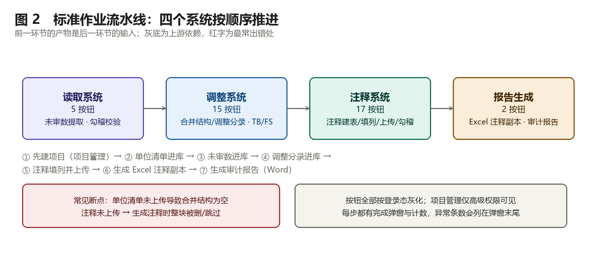
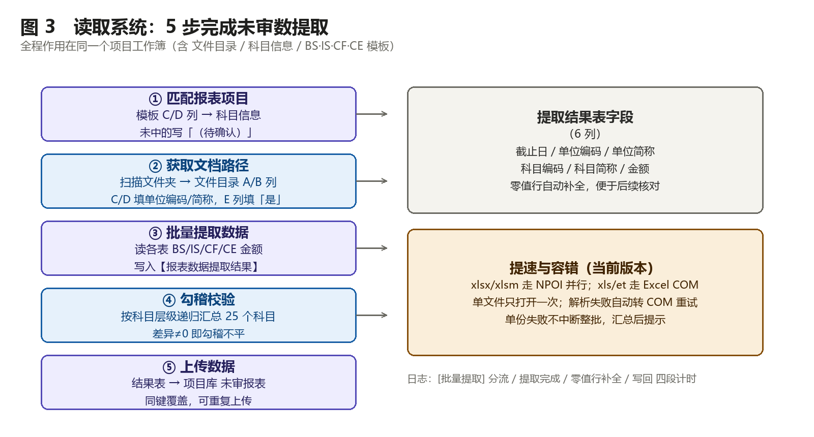
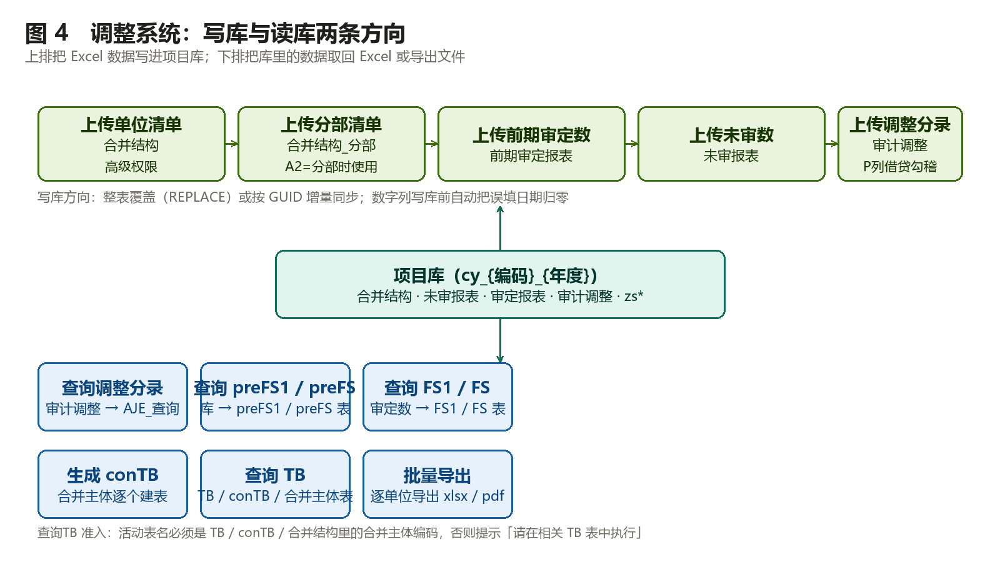
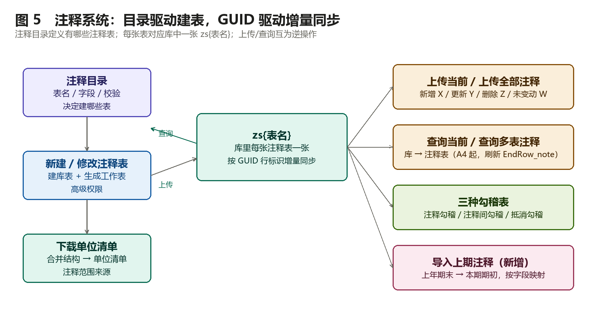
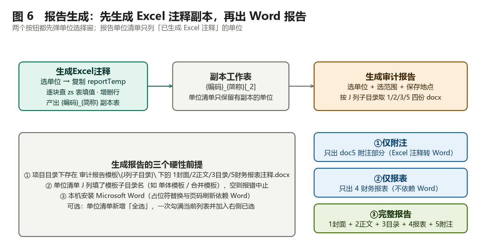
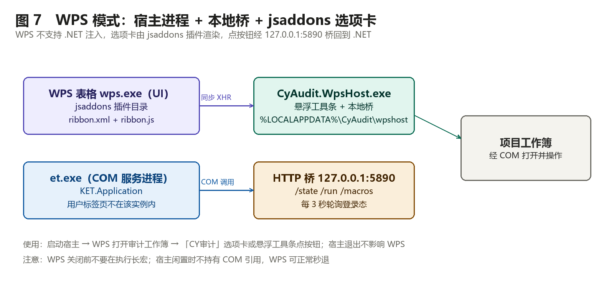

CY审计系统
操 作 手 册
Excel 加载项 / WPS 宿主 · 42 个功能按钮全流程说明
适用版本：BUILD ≥ 20260915-…-perm1-perm2-perm3
文档版本：v3.1-B · 2026-11-01
编制：CY审计系统项目组
项目 | 说明 |
|---|---|
适用版本 | CyAudit 客户端 BUILD ≥ 20260915-…-perm1-perm2-perm3（2026-11-01 发布） |
运行环境 | Windows + Microsoft Excel 2016 及以上；或 WPS 表格（12.x，需启动 WPS 宿主） |
选项卡名称 | CY审计（6 个功能组，共 42 个按钮） |
数据通路 | Excel/WPS → Api 服务（端口 5123）→ MySQL（RDS）；客户端不直连数据库 |
权限模型 | 登录后按账号与「项目角色」授权访问项目库；项目维护对管理职级开放，用户管理仅管理员，受控按钮按「项目创建人 / 项目角色」守门 |
本手册按当前线上版本整理，按钮名称、弹窗字段与提示语均与最新加载项一致。文中图片为功能示意图，实际界面以加载项为准。
目录
1. 系统概览与作业流水线
2. 安装、配置与登录
3. 项目管理
4. 读取系统（5 个按钮）
5. 调整系统（15 个按钮）
6. 注释系统（17 个按钮）
7. 报告生成系统（2 个按钮）
8. WPS 模式使用说明
9. 数据规范与命名规则
10. 性能说明与常见问题
一、系统概览与作业流水线
1.1 三个组成部分
CY审计系统由客户端加载项、Api 服务、MySQL 项目库三层构成，三者单链路串行：Excel 端只负责读表、填表、算表，所有跨进程取数与写库都经 Api 中继，因此本机无需安装 MySQL 驱动，也无法绕过账号授权直接连库。

图 1 系统架构：单链路 Excel/WPS → Api → RDS
· 客户端：Excel 加载项（CyAudit.Addin-AddIn64-packed.xll）或 WPS 宿主（CyAudit.WpsHost.exe）。所有按钮、弹窗、模板处理都在这里。
· Api 服务：（由实施/管理员下发的服务地址，或安装包内置默认值，可通过环境变量 CYAUDIT_API_URL 或 config.json 覆盖）。负责登录鉴权、签发专属库凭据、数据库读写中继（/api/db/*）、项目库管理（/api/projects/*）、Excel 注释转 Word（/sheet-to-word）。
· MySQL：每项目一库，库名固定为 cy_{单位编码}_{年度}，存放合并结构、未审报表、审定报表、审计调整、各注释表（zs*）等结构化数据。
1.2 选项卡与按钮总览
功能组 | 按钮数 | 主要职责 | 权限 |
|---|---|---|---|
欢迎 | — | 动态问候（登录后显示「用户名，早上好/下午好」） | — |
登录 | 2 | 登录、登出 | 所有角色 |
项目管理 | 2 | 项目维护（新建/修改）、用户管理 | 管理职级（用户管理仅管理员） |
读取系统 | 5 | 模板匹配、扫描目录、批量提取未审数、勾稽校验、上传未审数 | 登录即可 |
调整系统 | 15 | 合并结构/期初审定/未审数/调整分录进库，TB/FS/conTB 导出与批量导出 | 上传单位清单需受控守门（管理员/创建人/项目角色高职） |
注释系统 | 17 | 下载单位清单、建改注释表、取数、填列上传、三种勾稽表、注释查询、导入上期注释 | 建改注释表需受控守门（管理员/创建人/项目角色高职） |
报告生成系统 | 2 | 生成 Excel 注释副本、生成审计报告（Word） | 登录即可 |
未登录时业务按钮全部灰显；登录后按角色与「项目角色」二次过滤——受控按钮（上传单位/分部清单、新建/修改注释表）对所有登录用户点亮，点击时按「管理员 / 项目创建人 / 项目角色高职」守门，无权弹窗拦截。
1.3 标准作业流水线

图 2 标准作业流水线：四个系统按顺序推进
一次完整的年度审计底稿作业，按下列顺序推进，前一步的产物就是后一步的输入：
1. 建项目（项目管理）：确定单位编码、年度、存放位置，生成 4 套底稿工作簿。
2. 单位清单进库（调整系统：上传单位清单）：这是合并范围与所有单位清单的唯一数据源，必须最先完成。
3. 未审数进库（读取系统 5 步，或调整系统「上传未审数」）。
4. 调整分录进库（调整系统：上传调整分录），随后查询 TB/FS/conTB 并批量导出。
5. 注释填列并上传（注释系统）：建注释表 → 填列 → 上传当前/全部注释。
6. 生成 Excel 注释副本（报告生成系统）。
7. 生成审计报告（报告生成系统）：Word 报告（封面/正文/目录/报表/附注）。
1.4 角色与权限
角色 | 可做 | 不可做 |
|---|---|---|
管理员（超管通行） | 全部按钮；用户管理（账号/职级维护）仅管理员；全部项目授权与成员管理；受控操作直接放行 | — |
合伙人 / 总监 / 经理 / 项目经理 / 项目助理 / 实习生 | 读取、调整、注释填报与查询、报告生成；项目维护（新建项目等）；受控操作按「项目创建人 / 我在项目角色为合伙人/总监/项目经理」放行 | 用户管理；受控操作无权时点击弹窗拦截；修改/状态仅项目创建人；非项目创建人不可改项目 |
修改项目/状态仅项目创建人或管理员（Api 端强制校验，与界面是否可见无关）；成员管理与项目授权=管理员或「我在该项目角色为合伙人/总监/项目经理」（创建人不保留成员管理权，2026-11-01 决策）。
二、安装、配置与登录
2.1 安装客户端
1. 运行 CyAuditClientSetup.exe（默认安装到当前用户，无需管理员权限）。
2. 安装会部署三部分：Excel 加载项 %LOCALAPPDATA%\CyAudit\addin、WPS 宿主 %LOCALAPPDATA%\CyAudit\wpshost、WPS 选项卡插件 %APPDATA%\kingsoft\wps\jsaddons。
3. 完全退出 Excel 后重新打开，出现「CY审计」选项卡即安装成功（Excel 只在加载项启动时读取一次选项卡定义，不重启看不到新按钮或新名称）。
4. 校验版本：打开 %TEMP%\cyaudit_addin.log，末行应包含 BUILD= 与最新版本串（例如 …-perm1-perm2-perm3）。
2.2 Api 地址配置（内网/外网）
默认走安装包内置地址 （由实施/管理员下发的服务地址，或安装包内置默认值，可通过环境变量 CYAUDIT_API_URL 或 config.json 覆盖）。如需改动，按优先级从高到低：
1. 环境变量 CYAUDIT_API_URL；
2. 配置文件 %LOCALAPPDATA%\CyAudit\config.json：{"ApiBase":"http://IP:端口"}。
改完重启 Excel 生效。浏览器直接访问该地址能返回 JSON，说明网络可达。
2.3 登录与登出
· 登录：点击「登录」→ 输入管理员分配的账号、密码 → 成功后欢迎区显示「xxx，下午好！」且业务按钮全部点亮；「登录」变灰、「登出」点亮。
· 登出：点击「登出」→ 清除本地凭据、恢复共享账号模式，业务按钮重新灰化。
· 登录后所有数据库操作使用你的专属授权凭据执行，只能访问被授权的项目库；换电脑登录同样受此限制。
2.4 项目工作簿约定
业务按钮只认「项目工作簿」——由项目管理生成的四套底稿。库名优先从工作簿「项目信息」表读取：
「项目信息」表：项目代码（D5，自动去 No. 前缀）+ 年度（值列 H） → 项目库 cy_{单位编码}_{年度}
仅当工作簿没有「项目信息」表时，才按文件名兜底解析（文件名格式：{单位编码}_{项目简称}_{年度}_{系统名}.xlsx，首个 4 位纯数字段视为年度）。工作簿内固定工作表及其用途：
工作表 | 用途 |
|---|---|
项目信息 | 项目名称、单位编码、报表日、外部文件表名映射（第 17–20 行）等 |
科目信息 | 科目编码/名称/报表项目/上级编码，是匹配与勾稽的字典表 |
单位清单 | 单位编码、简称、类型（单体/合并）、合并层级、上级单位、模板子目录（J 列） |
文件目录 | 未审报表文件清单：A 文件名、B 路径、C 单位编码、D 单位简称、E 是否提取、F 最新更新时间 |
BS / IS / CF / CE | 取数模板（A 列行性质、C/D 列报表项目，CE 为权益变动表） |
注释目录 | 定义注释表名、字段、校验，是建表与查询的依据 |
reportTemp / conreportTemp | 生成 Excel 注释的母版（单体/合并） |
三、项目管理
3.1 项目维护（新建 / 修改）
管理职级（合伙人/总监/经理/项目经理/管理员）可见。点击「项目维护」弹出项目管理对话框，列表显示「我创建的 + 被授权参与的」项目。
新建项目：
1. 填写项目名称、年度、单位编码（简称用于文件名与库名）。
2. 选择存放位置（弹出位置选择窗，建议放在项目共享目录，便于同组协作）。
3. 确认后系统在库中创建 cy_{单位编码}_{年度} 及基础表，并在目标目录生成 4 套底稿：报表读取系统、报表调整系统、报表注释系统、报告生成系统。
4. 首次使用需在「项目信息」核对报表日、单位信息，并导入单位清单与科目信息。
修改项目/状态：仅项目创建人与管理员可用（选中他人项目时按钮置灰、双击入口同样拦截）；可调整参数、重新生成缺失底稿，不会清空库内已上传数据。
3.2 用户管理
1. 点击「用户管理」；
2. 新建组员账号（或选择已有账号）；
3. 勾选该账号可访问的项目库（授权/回收）；
4. 保存后组员即可用自己的账号登录并只看到被授权的项目。
组员忘记密码可在此重置；人员离场务必及时回收授权。
四、读取系统（5 个按钮）
读取系统负责把外部「未审报表文件」的数据汇总成一张标准结果表，再写进项目库。

图 3 读取系统：5 步完成未审数提取
4.1 ① 匹配报表项目
· 作用：把模板 BS/IS/CF 的 C/D 列报表项目、CE 的权益成分与细项表头，按项目库「科目信息」匹配，回填科目编码与科目名称。
· 操作：确认已登录、当前活动工作簿是目标项目工作簿 → 点击按钮 → 等待完成提示。
· 校验：模板中出现「（待确认）」即为未匹配项，需要人工补填；系统保留 XLOOKUP 公式，手填编码后名称会自动带出。
· 匹配优先级：科目名 == 报表项目+"（报表项目）" ＞ 平名 ＞ 先入。CE 同时支持纵向与横向模板（F1 指定或自动识别）。
4.2 ② 获取文档路径
· 作用：选择文件夹，递归枚举 .xls / .xlsx / .xlsm，清空并重填「文件目录」A（文件名）、B（文件路径）。
· 操作：点击 → 选文件夹 → 等待扫描完成。
· 校验：核对目录行数；补齐 C 列单位编码、D 列单位简称（可与单位清单对应）；把需要提取的行 E 列填「是」——只有 E 列为「是」的行才会被下一步处理。
4.3 ③ 批量提取数据
· 作用：按模板坐标读取每个文件的 BS/IS/CF/CE 金额，汇总写入新建的「报表数据提取结果」表，并回写文件目录 F 列最新更新时间。
· 前置：已完成 ①②，并核对模板匹配结果；外部文件表名与「项目信息」第 17–20 行映射一致。
· 操作：点击按钮 → 状态栏显示「提取中 x/y」→ 完成后弹窗列出处理/跳过/异常条数。
· 结果表字段：截止日、单位编码、单位简称、科目编码、科目简称、金额（含零值行，便于后续核对与补零）。
· 提速机制（当前版本）：.xlsx/.xlsm 走 NPOI 并行解析（每文件只打开一次）；.xls/.et 走 Excel COM 串行；任何文件解析失败会自动转 COM 重试一次。单份失败不再中断整批，异常会汇总在弹窗末尾。
· CE 口径：横向/纵向共用同一坐标位移，本期与上期两期都提取；科目简称 = 成分名_细项名（如「实收资本_上年年末余额」）。
4.4 ④ 勾稽校验
· 作用：按「科目信息」上级编码层级递归汇总 25 个勾稽科目（含权益类），把 未审报表金额 / 推理计算金额 / 差异 / 推理计算过程 写入「勾稽核对」表。
· 操作：点击按钮 → 查看「差异」列，非 0 行即勾稽不平。
· 读结果：「推理计算过程」列显示 Σ明细+方向；提示「科目信息中无下级，无法勾稽」表示该科目在科目信息里没有明细。
4.5 ⑤ 上传数据
· 作用：把「报表数据提取结果」按 截止日+单位编码+科目编码 REPLACE 写入项目库「未审报表」。
· 建议顺序：先 ④ 勾稽校验通过，再上传。
· 注意：同键重复上传会覆盖旧值，不会产生重复行。
五、调整系统（15 个按钮）
调整系统是「Excel ↔ 库」的双向通道：上排把数据写进库，下排把库里的数据取回 Excel 或导出文件。

图 4 调整系统：写库与读库两条方向
5.1 共同前提
1. 必须先登录；
2. 目标库优先由工作簿「项目信息」表确定（cy_{单位编码}_{年度}）；仅当缺少项目信息表时才按文件名兜底解析，文件名仍须遵循命名规范；
3. 上传类按钮优先走批量装载，失败自动回退逐行 REPLACE；数字列写库前会把「误填成日期」的值归零，避免 decimal 类型报错；
4. 瞬时断线自动重连重试（读类重试 1 次，写类不重试，防止重复写入）。
5.2 写库类按钮
按钮 | 数据来源 → 去向 | 要点 |
|---|---|---|
上传单位清单 | 【单位清单】→ 库【合并结构】 | 覆盖式整表刷新；合并层级=1 的根实体强制类型=合并；必须最先执行，后续合并主体识别与下载单位清单都依赖它。受控操作：管理员/项目创建人/项目角色高职可执行，无权弹窗拦截 |
上传分部清单 | 【分部清单】→ 库【合并结构_分部】 | 与单位清单平行镜像（同受控守门）；仅在分部报告（TB 表 A2=「分部」）时使用 |
上传前期审定数 | 【FS1_输入】→ 库【前期审定报表】 | 供期初报表 FS1 / preFS1 与注释引用 |
上传未审数 | 【preFS_输入】→ 库【未审报表】 | 与「读取系统-上传数据」是未审数的两条入口 |
上传调整分录 | 【AJE_输入】→ 库【审计调整】 | 先校验 P 列借贷勾稽：出现 FALSE 直接中止不写库；按 Q 列 GUID 增量 upsert 并删除库中缺失行 |
增行 / 删行：只作用于本地 AJE 工作表，不触库。增行会向下填充 C/D 固定列与期末期初差异公式；删行会清空该行「最新填写时间」。改动只有执行「上传调整分录」后才同步到库。
5.3 读库导出类按钮
按钮 | 动作 | 要点 |
|---|---|---|
查询调整分录 | 按 AJE_查询 表 C2（单位编码）与 I2（调整期间）查【审计调整】→ 写 B4 起 | C2 填「编码_简称」，或 ALL_根简称 查全部；误填公式串会被自动清空为全量查询 |
查询 preFS1 / preFS | 库 →【preFS1】/【preFS】 | 核对未审数用 |
查询 FS1 / FS | 审定数 →【FS1】/【FS】 | 项目勾选「是否审计期初数」时，FS1 的期初改取视图「审定报表」（经调整后审定数），否则取【前期审定报表】；取数口径会写入 fs_export_trace.log |
生成 conTB | 对合并结构里类型=合并的主体 → 逐个建 conTB 表 | 弹窗勾选主体；已存在同名表跳过；无合并主体时提示「无需生成合并TB」 |
查询 TB | 试算平衡数据 → 当前活动表 | 准入：活动表名必须是 TB / conTB / 合并主体编码；表头 C2=截止日、D2=单位编码；数据写 A5 起。仅活动表为 TB 时附带刷新【AJE】表 |
批量导出 | 单位×工作表 → 逐单位导出 xlsx / pdf | 弹窗五步：①选工作表 ②已选单位 ③单位清单（筛选/全选/清空）④格式（Excel/PDF）与方式（合并为一个工作簿/逐工作表分拆）⑤导出路径；结束后自动还原 TB 表 B2/D2 |
5.4 分部报告模式
当活动 TB 表 A2 单元格 = 「分部」 时，调整系统切换为分部口径：
· 结构清单改从「合并结构_分部」（工作簿侧「分部清单」）读取；
· 查询TB 调用分部合并例程（查询分部合并TB / 查询期末分部合并数）；
· 新增固定工作表「分部合并TB」视同合并主体表。
分部与单体的底稿是两套独立流程，不要在同一工作簿内混用。
六、注释系统（17 个按钮）
注释系统把「注释目录 → 建表 → 填列 → 上传 → 勾稽 → 查询」串成闭环。

图 5 注释系统：目录驱动建表，GUID 驱动增量同步
6.1 四个核心概念
· 注释目录：定义有哪些注释表、每张表的字段与校验，是建表与查询的依据。
· zs{表名}：库里每张注释表对应一张库表，行以 GUID 行标识区分。
· reportTemp / conreportTemp：生成 Excel 注释副本的母版（单体 / 合并）。
· GUID 增量同步：上传时用行标识做快照比对，只处理差异行（新增/更新/删除），避免整表重传。
6.2 下载单位清单
从库【合并结构】整表覆盖写到工作簿【单位清单】，并重建【Data】表与命名引用。注释系统的「查询多表注释」「生成 Excel 注释」都以这里的单位清单为范围来源，上传注释前建议先下载一次保证单位最新。
6.3 新建注释表 / 修改注释表（受控操作）
守门（2026-11-01）：管理员超管通行 / 当前项目创建人 / 我在项目角色∈{合伙人,总监,项目经理} 可执行；其余用户点击弹窗「您无权执行该操作，如需修改请提请当前项目经理执行操作。」（上传单位清单、上传分部清单同此守门；服务端 zs-tables 二次硬校验）。1. 在【注释目录】维护注释表定义（表名、名称、字段、校验）；
2. 点击按钮 → 弹附注编辑窗（按科目分类分 Tab + 勾选列表）→ 二次确认；
3. 系统先建/改库表 zs{表名}，再按 noteModel 批量生成对应工作表。
幂等规则：已存在的同名工作表不会被覆盖，修改结构后重跑即增量更新，不会丢已录数据。弹窗内「刷新抓取」可强制重读注释目录。
6.4 取数按钮（查询 FS1 / FS / AEE1 / AEE）
· 查询 FS1 / FS：审定数写入【FS1】/【FS】；
· 查询 AEE1 / AEE：按合并单位清单从审计调整汇总生成合并抵销表，写【AEE1】/【AEE】；
· 前置：AEE 系列必须先「上传调整分录」，否则库内无调整数据。
6.5 增行 / 删行
在当前注释表选中行（第 4 行起）插入或删除。增行向下填充固定列与差异公式；删行清空该行「最新填写时间」（标记待重填）。在 AJE 表或普通表点击会提示「请在注释表中选中行」。
6.6 上传当前注释 / 上传全部注释
· 上传当前注释：把活动注释表增量同步到库。执行前会校验表名在注释目录内、GUID 列布局合规、误填日期归零，然后快照比对、批量 upsert、删除库中缺失 GUID 行，最后回写编制人 / GUID / 最新填写时间。
· 结果提示四态计数：新增 X / 更新 Y / 删除 Z / 未变动 W，可据此判断是否漏填。
· 编制人为空自动填当前登录用户；C/D/E 固定列缺失的行会被拒收。
· 上传全部注释：遍历全工作簿各注释表，共享一条长连接逐表上传，进度窗滚动汇总，可取消（已完成部分保留）。比逐表点击更快。
6.7 三种勾稽表
按钮 | 目标表 | 比较内容 |
|---|---|---|
生成注释勾稽表 | noteChecks | 单体单位：报表数（FS/FS1）vs 注释填写数 |
生成注释间勾稽表 | 注释表内 | 合计行与明细的一致性 |
生成抵消勾稽表 | aeeChecks | 合并单位：抵销数（AEE/AEE1）vs 注释填写数 |
前置：已建注释表（第 3 行 A 列含「返回noteChecks」标记）；活动表须为目标勾稽表。公式按「基础信息」资产负债表日四位次自动展开 1–4 期块，缺报表页的期间留空，不制造假差异。
6.8 查询当前注释 / 查询多表注释
· 查询当前注释：把活动注释表对应的 zs{表名} 数据查回并填列（A4 起，刷新 EndRow_note 边界）。
· 查询多表注释：弹窗勾选 ①合并单位范围 ②注释名称范围（可勾「全选勾稽表」），可选编制人筛选，然后按「所选表 × 所选单位」逐表导出，共享连接 + 进度窗，可取消。
与上传互为逆操作：上传 = 表→库，查询 = 库→表。
6.9 导入上期注释（新增）
用于跨年连续编制：把上年项目库中已审定的注释按字段映射（本期期初 ← 上年期末）写进当前注释表。
1. 选择上年已授权的项目库；
2. 勾选需要导入的主体；
3. 选择导入方式：追加整行，或按项目名匹配填充（仅填空行，不覆盖已填内容）；
4. 确认后逐表写入，完成后给出导入行数汇总。
适用前提：上年注释已上传、字段名可对应。变动类注释表只导入期初类字段。
七、报告生成系统（2 个按钮）

图 6 报告生成：先生成 Excel 注释副本，再出 Word 报告
7.1 生成 Excel 注释
前置条件（缺一不可）：
1. 已「新建注释表」建好注释表结构；
2. 已「上传全部注释」，zs* 表有数据；
3. 工作簿含 reportTemp（单体/母公司）或 conreportTemp（合并）；
4. 数据库「合并结构」含该单位（单位编码非空）。
操作：
1. 点击按钮 → 弹窗：左侧单位清单（带搜索框、复选框），中间「添加 ▶ / ◀ 移除 / ▲ 上移 / ▼ 下移」，右侧已选单位；
2. 底部可选项：副本命名（固定为「单位编码_单位简称」，只读）、完成后激活第一个副本、过滤「合计」行（默认勾选）；
3. 确定后进度窗逐单位生成（①准备单位数据 ②逐表填值），可取消；
4. 结束时工作簿出现若干 {编码}_{简称} 注释副本表。
规则：合并主体用 conreportTemp、其余用 reportTemp（首选缺失时自动互换）；副本表名超 31 字符截断，重名追加 _2/_3；无对应 zs 表的「无名块」整块删除；零结果块跳过，汇总提示缺多少张 zs。
7.2 生成审计报告（Word）
前置条件：
1. 已「生成 Excel 注释」（报告的单位范围只列出已生成注释副本的单位）；
2. 项目目录下存在 审计报告模板\{J列子目录}\，内含 1封面 / 2正文 / 3目录 / 5财务报表注释 四份 docx；
3. 单位清单 J 列填了模板子目录名（如 单体模板 / 合并模板），为空或目录不存在会直接报错中止；
4. 本机安装 Microsoft Word。
操作：
1. 点击按钮 → 弹窗：左侧单位清单（只显示已生成 Excel 注释的单位，可搜索、可勾选，新增「全选」——勾上即把当前列表全部勾选并加入右侧已选）；
2. 选择生成范围：①仅附注（只出 doc5 附注）②仅报表（只出 4 财务报表，不依赖 Word）③完整报告（默认，1+2+3+5，4 报表经 InsertFile 并入 doc5）；
3. 选择 Word 保存地点；
4. 选非「仅报表」时弹出「Word 格式设置」，采集字体、行距等排版选项（取消即中止）；
5. 确认后进度窗逐单位生成，输出 {编码}_{简称}_审计报告 目录。
占位符替换（WordReportEngine 自动完成，须用半角花括号）：
占位符 | 取值 | 说明 |
|---|---|---|
{公司全称} | 单位全称 | 兼容旧写法 |
{公司简称} | 全称缩写 | — |
{报告号} | {单位编码}-{年度} | 如 1101-2025 |
{报告日期} | 生成当日 | yyyy年M月d日 |
{审计年度} | 年度 | 如 2025年度 |
{报表范围} | 合并 / 单体 | 按主体类型自动判断 |
{单位编码} | 单位编码 | — |
{资产负债表日} | {年度}年12月31日 | 期初为上年同期 |
Word 常把一句话拆成多个 run，引擎会按段落合并文本后替换，无需手工合并。格式调整只作用于追加的注释内容，模板原格式零改动；追加后会自动刷新页脚页码。
八、WPS 模式使用说明

图 7 WPS 模式：宿主进程 + 本地桥 + jsaddons 选项卡
WPS 不支持 .NET 加载项注入，因此 WPS 下的入口是「jsaddons 选项卡 + 独立宿主进程」：
1. 安装包会部署 WPS 插件到 %APPDATA%\kingsoft\wps\jsaddons\CyWpsTab_1.0.0，并在开机启动项注册 WPS 宿主；
2. 宿主 CyAudit.WpsHost.exe 常驻托盘，提供悬浮工具条与本地桥 127.0.0.1:5890；
3. WPS 的「CY审计」选项卡由 ribbon.xml + ribbon.js 渲染，点按钮时经同步 XHR 调桥，桥再让 .NET 通过 COM 驱动 WPS；
4. 选项卡每 3 秒轮询一次登录态，登录后按钮自动点亮（若刚启动宿主，最迟约 12 秒内刷新）。
使用步骤：
1. 启动 WPS 宿主（安装后首次自动启动，之后开机自启；也可在客户端「启动 WPS 宿主」）；
2. 用 WPS 打开审计工作簿（建议从宿主工具条「打开工作簿」进入，避免标签页与 COM 实例分离）；
3. 点选项卡或悬浮工具条上的按钮，操作方式与 Excel 完全一致；
4. 宿主闲置时不持有 WPS 的 COM 引用，WPS 可正常秒退；如需彻底停止，托盘右键「退出」。
差异与限制：WPS 部分版本对大批量格式刷写较慢；生成注释/报告这类长任务期间不要关闭 WPS；选项卡外观由 WPS 渲染，与 Excel 略有差异（分组扁平化，用竖线分隔模块）。
九、数据规范与命名规则
对象 | 规则 |
|---|---|
项目库名 | cy_{单位编码}_{年度}，由工作簿文件名推导，不可随意改名 |
注释副本表名 | {单位编码}_{单位简称}，超 31 字符截断，重名追加 _2/_3 |
注释库表名 | zs{注释表名}（合并母公司块用 MZS{表名}） |
注释行标识 | Q 列 GUID，由系统维护，不要手工修改或复制行 |
单位清单类型 | 单体 / 合并；合并层级=1 的根实体强制为合并 |
报表项目匹配 | 未匹配写「（待确认）」，保留 XLOOKUP 便于手填 |
数字列 | 写库前自动把误填日期归零，避免 decimal 报错 |
十、性能说明与常见问题
10.1 当前版本的提速点
场景 | 现状 | 说明 |
|---|---|---|
批量提取数据 | 毫秒级到数秒 | xlsx/xlsm 并行解析；xls/et 走 COM；单文件只打开一次；失败自动兜底 |
查询当前注释 | 通常 1–2 秒 | 目录按真实末行读取，字段定义整块读，不再逐格往返 |
查询 TB | 单体约 1.5 秒 / 合并约 3 秒 | 客户端已整块写入；剩余耗时在服务端存储过程，日志可看「服务端取数 / 写回」两段 |
生成 Excel 注释 | 每单位约 20 秒级 | 模板解析结果落盘缓存，第二次更快；Polish 整理已由逐格改为块写 |
10.2 常见问题速查
现象 | 排查 |
|---|---|
所有业务按钮灰色 | 未登录；已登录仍灰→看 %TEMP%\cyaudit_addin.log 是否有最新加载记录 |
选项卡名称/按钮没变 | Excel 未完全退出重启（选项卡只在加载项启动时读一次） |
批量提取某文件报错 | 看弹窗异常条数与 [批量提取] 日志；旧版 .xls 会自动转 COM，若仍失败多为文件损坏或被占用 |
提取后某表（如 CE）全为 0 | 核对「项目信息」第 17–20 行外部表名映射（注意隐藏空格，可用 =LEN() 验证）；确认外部文件含该表 |
模板出现「（待确认）」 | 报表项目在科目信息中无匹配，手工补编码/名称后重新提取 |
勾稽不平 | 看「勾稽核对」差异列与推理计算过程；常见为科目层级缺失、调整方向列未设置、明细未提取 |
上传调整分录报借贷不平 | AJE_输入 P 列有 FALSE 行，修订后重传 |
上传后库里没数据 | ① 文件名推导的库名是否预期；② 是否漏「上传单位清单」；③ 加载项是否最新 |
上传注释提示「非注释表」 | 活动表名不在注释目录 D 列，先「新建注释表」 |
上传注释提示「布局不匹配」 | GUID 列含非 GUID 文本，按新规范重建后再传 |
查询 TB 提示「请在相关 TB 表中执行」 | 活动表名须为 TB / conTB / 合并主体编码 |
生成注释无副本表 | 合并结构无该单位 / 缺 reportTemp / zs 表无数据 |
生成报告报「未找到审计报告模板」 | 项目目录缺「审计报告模板」或 J 列子目录名不符 |
报告里 {xxx} 没被替换 | 须半角花括号；确认加载项为最新（引擎会合并 run） |
追加注释后页码陈旧 | Word 里右键页脚「更新域」；最新版会自动刷新 |
WPS 下按钮灰 | 宿主未启动，或 WPS 启动早于宿主（等 12 秒或重启 WPS） |
关闭 WPS 卡顿 | 确认宿主为最新版；长宏执行中不要关 WPS |
10.3 日志位置
文件 | 内容 |
|---|---|
%TEMP%\cyaudit_addin.log | 加载项加载记录与 BUILD 版本 |
%LOCALAPPDATA%\CyAudit\addin\port_error.log | 单次失败细节（ODBC/网络/超时） |
%LOCALAPPDATA%\CyAudit\addin\fs_export_trace.log | 查询/导出类按钮计时、取数口径、批量提取分段耗时 |
%LOCALAPPDATA%\CyAudit\addin\relay_retry.log | 读类请求超时后的自动重试记录 |
%LOCALAPPDATA%\CyAudit\addin\bulk_error_{表}_{时间}.log | 批量写库失败批次明细 |
%LOCALAPPDATA%\CyAudit\wpsaddon\bridge.log | WPS 桥请求记录（含 /state 心跳） |
结语：本手册覆盖当前版本的 42 个按钮与两条宿主链路（Excel / WPS）。遇到弹窗报错时，先看提示里的异常条数与日志路径，再对照第 10 章排查；仍无法解决时，请把对应日志的末尾若干行与操作时间点一并反馈。
修订记录
版本 | 日期 | 修订要点 |
|---|---|---|
v3.1-B | 2026-11-01 | 权限模型对齐 BUILD …-perm1-perm2-perm3：①用户管理 Tab 仅管理员；②项目授权 Tab 按「我在项目角色（合伙人/总监/项目经理）」过滤，添加成员支持单击勾选与跨筛选记忆，项目角色 6 档（新增片区经理）；③受控按钮（上传单位/分部清单、新建/修改注释表）改为登录可点、点击守门弹窗；④修改/状态仅项目创建人或管理员；⑤「角色」文案统一为「职级」 |
v3.0-A | 2026-10-31 | 首版：42 个按钮全流程说明 |